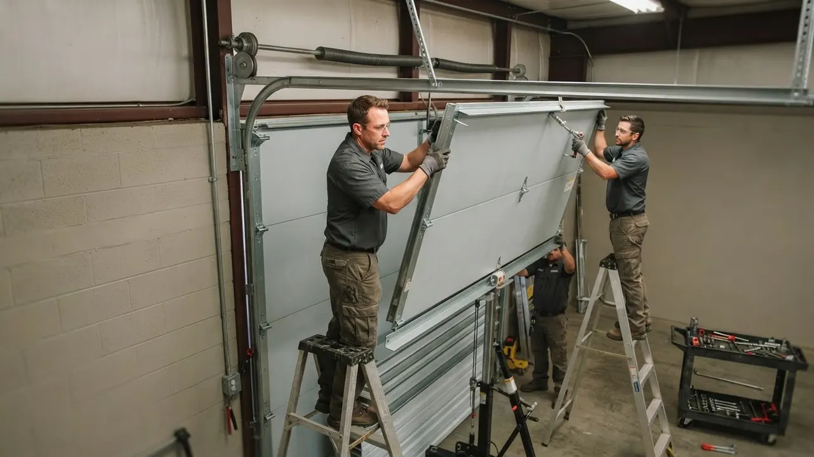

Garage Door Spring Repair
Garage Door Spring Repair Wilmington DE Done Right the First Time
When a spring snaps, your door stops moving and your car stays trapped. Our team handles Garage Door Spring Repair Wilmington DE homeowners trust for fast, safe turnaround, usually the same day you call. We stock torsion springs for LiftMaster, Chamberlain, Genie, and Craftsman systems, so we are not waiting on a parts order while your door sits dead in the open position.
Service overview
Garage Door Spring Repair Wilmington DE: What It Involves
Garage Door Spring Repair Wilmington DE is the replacement or re-tensioning of the torsion or extension springs that counterbalance your door's weight. A standard double-car door weighs 150 to 250 pounds, and the springs carry every ounce of it. When one breaks, the opener tries to lift that full weight alone and usually burns out its motor within a few cycles. We swap both springs at once, reset the cable drums, and balance the door so it holds position at the halfway point.
Most Wilmington springs fail after 7 to 10 years or roughly 10,000 open-and-close cycles. The coastal humidity and freeze-thaw swings along the Brandywine make it worse, and we see a spike in broken spring repair Wilmington calls every January when temperatures drop below 25 degrees. If you heard a loud bang from the garage last night, that was the spring, not the door falling.

Practical benefits
Why Wilmington Homeowners Call Us for Springs
A broken spring is not a wait-and-see problem. It is a safety issue, a security issue, and a money issue if the opener motor goes next. Here is what you get when we handle the job.
Same-Day Spring Replacement
We carry the most common torsion springs on every truck, so same day garage door spring repair Wilmington DE is the norm, not the exception. Call before noon and we are usually on-site within 2 to 4 hours. That means your car is back in the garage tonight instead of parked on the street in Cool Spring.
Both Springs, One Visit
Springs wear at the same rate. Replacing one and leaving the other is how you end up paying two service calls in six months. We replace the pair, match the wire gauge and inside diameter to your door's weight, and reset the tension so both sides pull evenly.
Code-Correct Safety Hardware
Every job includes a safety cable through the new springs where extension hardware is present, meeting UL 325 and ANSI/DASMA 102 requirements. We also inspect the galvanized steel cables, cable drums, and bottom brackets while we are in there, because a snapped cable on a fresh spring is a wasted call.
Opener Protected
A door running on a dead spring will strip the opener's gears or burn the motor within a few cycles. Fixing the spring first saves you a $400 to $700 motor replacement later. We test the opener's travel limits and force settings after the swap so nothing is straining.
How service works
How Our Spring Repair Process Works
No mystery, no upsell theater. Here is exactly what happens from the moment you call until the door is running quiet again.
STEP 01
Phone Diagnosis
You call (302) 556-5080 and describe what happened. A loud bang, a door that opens six inches and stops, or a door that will not budge at all. We ask the door's size and material, then quote a realistic range before we roll. Two minutes on the phone saves you a wasted service call.
Tools and methods
Tools and Methods We Use on Spring Jobs
Winding Bars
Solid steel bars used to wind and release torsion spring tension in controlled quarter-turns. We never use screwdrivers or makeshift tools, which slip and cause injuries.
Vise Grips and C-Clamps
Lock the torsion bar in place while we work, so the spring cannot spin free and release stored energy unexpectedly.
Socket Wrench Set
Used to remove and reinstall spring cones, cable drums, and bracket bolts. We carry standard and metric sizes to fit any residential or commercial door.
Tape Measure and Level
Confirm door width, height, and track alignment. Spring size depends on exact door weight and dimensions, so measurement errors turn into balance problems.
Safety Glasses and Gloves
Non-negotiable on every spring call. A loaded torsion spring holds enough energy to cause serious injury if a winding bar slips.
Power Drill
Speeds up bracket and hardware removal on larger jobs. We use it for fasteners, never for anything that touches spring tension.
Rubber Mallet
Seats cable drums and brackets without damaging the metal. A hammer dents the drum and throws off cable tracking.
DASMA Spring Sizing
We follow DASMA certification standards to match spring wire gauge, inside diameter, and length to the door's actual weight. A spring that is one gauge off will fail early or leave the door unbalanced.
UL 325 Safety Compliance
Every spring job includes a check that the door's safety reverse and safety cables meet UL 325. This is the standard that keeps a garage door from crushing something or someone in its path.
Pair Replacement
We replace both springs in a two-spring system even when only one has failed. Springs wear at the same rate, and a new spring paired with an old one will fail within months.
Hand-Balance Test
After the swap, we disconnect the opener and lift the door by hand. A correctly balanced door holds position at the halfway point. If it drifts, we adjust tension until it does not.
High-Cycle Upgrade Option
For doors that cycle more than 6 times a day, we offer springs rated for 25,000 cycles instead of the standard 10,000. The upcharge is $40 to $80 and roughly doubles spring life.

Where this service fits
When Wilmington Homeowners Call Us for Springs
A homeowner in Cool Spring hears a bang at 6 a.m. and the door will not open before work.
We treat this as a priority call. A technician arrives within 2 to 4 hours with the correct torsion springs on the truck, replaces both, and balances the door. The whole visit takes about 90 minutes. The customer is back on the road by mid-morning and the door runs quieter than it did before the spring failed.
A landlord in Hedgeville has a tenant reporting the garage door opens halfway and stops.
We diagnose the failed spring, replace the pair, and inspect the cables and rollers for uneven wear. We also reset the opener's travel limits so the tenant is not fighting a half-open door. The tenant has a working door the same day, and the landlord avoids a second service call for the matching spring.
A business on the Riverfront has a commercial door that cycles 40 times a day and the springs are shot after three years.
We spec high-cycle springs rated for 25,000 cycles, replace the pair, and check the drums and cables for wear from the heavy traffic. The upgrade costs $40 to $80 more and roughly doubles spring life. The business gets a door that holds up to daily traffic and a maintenance schedule that catches wear before it causes downtime.
A homeowner in The Highlands is selling and the home inspector flagged a broken spring.
We handle the repair quickly, provide a clear invoice showing the parts and labor, and balance the door so it passes a follow-up inspection. We can usually schedule within 24 hours of the call. The repair is documented, the door works correctly, and the sale moves forward without a renegotiation over the garage.
Local execution
How Spring Repair Runs in Wilmington, Delaware
Wilmington's building stock splits into two camps, and each has its own spring issues. The older detached garages in The Highlands, Wawaset Park, and Brandywine Village often have original wood doors that were retrofitted with torsion hardware decades ago. Those systems tend to have mismatched springs and worn drums, so we measure carefully and often replace more than just the springs. Newer attached garages in Riverfront and along the Riverfront corridor use standard 7-foot doors with 10,000-cycle springs, which fail predictably at the 7 to 10 year mark. The climate matters too. Coastal humidity off the Christina River corrodes cables and drums, and the freeze-thaw swings in January and February push tired springs past their limit. We see a clear spike in broken torsion spring repair in Wilmington, Delaware calls when temperatures drop below 25 degrees. If you are searching for emergency garage door spring repair Wilmington DE on a cold night, we run those calls 24/7. Most jobs in the 19801, 19802, 19805, 19806, 19809, and 19850 ZIP codes get a technician within 2 to 4 hours.
The Highlands
Many detached garages here have older wood doors with retrofitted torsion systems. We often find mismatched springs and worn cable drums that need replacement alongside the springs.
Riverfront
Newer attached garages with standard 7-foot doors. Springs typically fail at the 7 to 10 year mark, and we stock the common sizes for same-day replacement.
Cool Spring
Mix of older and renovated homes. We see a lot of extension spring systems here that we convert to torsion when the hardware is worn out.
Trolley Square
Tight alleys and shared driveways mean we often work with the door partially open. We bring the right tools to handle spring swaps in confined spaces.
Brandywine Village
Historic homes with original garage structures. Spring sizing here requires careful measurement because door weights vary more than in newer builds.
Winter freeze-thaw cycles dropping below 25 degrees
Cold makes spring steel brittle. We see a spike in snapped springs from December through February, and we run emergency calls through those months to get doors working again fast.
Coastal humidity off the Christina River
Moisture corrodes galvanized steel cables and cable drums faster than inland areas. We inspect both during every spring call and replace anything showing rust or fraying.
Older detached garages with retrofitted hardware
Many Wilmington garages were built for lighter doors and later fitted with heavier ones. Springs are often undersized for the current door weight, which is why they fail early.
High-cycle commercial doors near the Riverfront
Businesses with doors cycling 30 to 50 times a day burn through standard springs in 2 to 3 years. We spec high-cycle springs rated for 25,000 cycles on those jobs.
Problems we solve
Spring Problems We Fix for Wilmington Homeowners
Springs fail in predictable ways, and each failure mode points to a different fix. Here are the most common spring problems we see on Wilmington doors and how we handle them.
Loud bang from the garage, door will not open
We replace both torsion springs, reset the cable drums, and balance the door. Most jobs are done in 60 to 90 minutes, and we test the opener afterward to confirm nothing was damaged when the spring let go. A snapped torsion spring leaves the door too heavy for the opener. Running it anyway strips the opener gears or burns the motor within a few cycles.
Door opens a few inches then stops
We confirm which spring failed, replace the pair so they wear evenly, and check the cables for damage from the uneven load. Replacing both now costs less than two separate service calls six months apart. This usually means one spring in a two-spring system has failed. The door is running on half its counterbalance, which overloads the remaining spring and the opener.
Springs keep breaking every couple of years
We inspect the full door system during every spring call. If rollers are dragging, track is binding, or the opener is over-forcing, we fix that too. It costs a bit more upfront and saves you a repeat spring job. Early spring failure points to a deeper issue: an unbalanced door, worn rollers, a bent track, or an opener with the force set too high. New springs will keep failing until the cause is fixed.
Door is crooked or hangs lower on one side
We re-tension both springs to matching turns, check the cables and drums for uneven wear, and rebalance the door. If a cable has stretched, we replace it so both sides lift at the same rate. Uneven tension means one spring is doing more work than the other. Left alone, it warps panels, wears the track, and eventually snaps the overloaded spring.

A practical standard for every visit.
Clear planningPrepared arrivalsCareful workLocal follow-through
Experience in the details
16 Years of Spring Work in New Castle County
Delaware Express Garage Door Service has been fixing garage doors since 2010, which puts us at 16 years serving Wilmington and the surrounding New Castle County area. Our technicians are trained on torsion and extension systems from Clopay, Amarr, Wayne Dalton, and Linear, and we follow DASMA certification standards on every spring spec. We have replaced thousands of springs in this city, from 1920s detached garages in The Highlands to modern attached builds in Riverfront. That volume means we have seen every failure mode and stocked the parts to fix it.
- 16 years in business, founded in 2010, serving Wilmington and New Castle County.
- DASMA-certified spring sizing and UL 325 safety compliance on every install.
- Full stock of torsion springs, winding bars, and galvanized steel cables on each truck.
- Experience with LiftMaster, Chamberlain, Genie, Craftsman, and Marantec opener systems.
- Delaware contractor licensed and insured for residential and commercial spring work.

Where we work
One local team. A lot of ground covered.
Downtown WilmingtonRiverfrontThe HighlandsTrolley SquareForty AcresBaynard VillageWawaset ParkCool SpringTrinity VicinityBrowntownLittle ItalyUnion Park Gardens
Check my address Notes from local customers
What Wilmington Customers Say
Heard a bang at 6 a.m. and my door would not open. Called Delaware Express and they had a tech out by 10. He replaced both torsion springs, balanced the door, and showed me the old broken one. Charged exactly what he quoted on the phone. Door has been quiet for eight months now.
Our garage door opener was grinding and we thought the motor was shot. Turned out the spring had snapped and the opener was lifting the whole door weight. They fixed the spring, reset the opener limits, and saved us from buying a new motor. Honest diagnosis, fair price.
We manage six rental units with older garage doors. Delaware Express replaced springs on three of them in one afternoon and gave us a maintenance schedule for the rest. They know the older Wilmington building stock and what fails first. Reliable crew, fair pricing, no runaround.
Before the visit
Garage Door Spring Repair Questions Wilmington Homeowners Ask
Still wondering?(302) 556-5080
Most Wilmington spring jobs run $250 to $450 for a two-spring torsion replacement, including parts and labor. Single-spring doors land closer to $180 to $280. Extension spring setups cost less, usually $150 to $250. High-cycle springs rated for 25,000 cycles add $40 to $80. You get a firm quote on-site before any work begins.
Standard springs last 7 to 10 years or about 10,000 cycles. Wilmington's coastal humidity and winter freeze-thaw cycles push many doors toward the shorter end. If your door gets used 4 to 6 times a day, expect closer to 7 years. High-cycle springs rated at 25,000 cycles roughly double that lifespan for a modest upcharge.
No. A loaded torsion spring stores enough energy to break bones or kill. The job requires winding bars, C-clamps, and vise grips used in a specific sequence, and one slip on the winding cone releases the full load at once. We have seen DIY injuries in Wilmington that cost more in medical bills than the entire professional repair.
Delaware Express Garage Door Service handles torsion spring repair across Wilmington and New Castle County, including Cool Spring, Trolley Square, The Highlands, and Riverfront. Call (302) 556-5080 and we will give you a realistic arrival window, usually 2 to 4 hours for standard calls and faster for emergencies.
Keep exploring
Other Garage Door Services We Handle
Your next step is waiting
Need Garage Door Spring Repair Wilmington DE Today?
A broken spring will not fix itself, and every cycle on a dead spring risks your opener motor. Call (302) 556-5080 and we will give you a real arrival window, a firm price, and a door that works again. Same-day service across Wilmington and New Castle County.
Start with the basics
Call For Garage Door Service
Call (302) 556-5080 and tell us what your door is doing. We answer during business hours and run emergency calls after hours. Most days we can get a tech to you the same day, and we will give you a window, not a maybe.